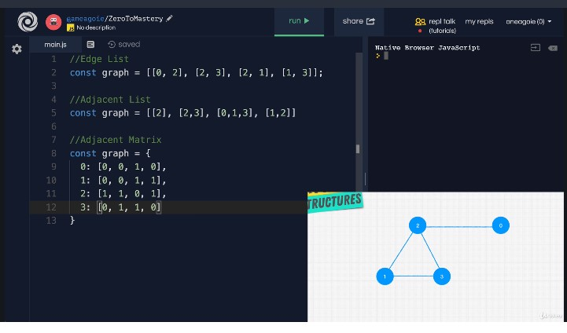

- Edge list -> const graph = [[0,2], [2,3], [2,1], [1,3]]
- Adjacent list - the index is the value of the node(when the value is a number that can be used as index) or using the keys of an object and the values are the nodes neighbors
- Adjacent matrix - true(1/ the value for the weighted graphs)/ false(0) to confirm or deny the connection between nodes

Visualgo graphs
Graphs are difficult to scale, but indispensable when you want to implement relationships
That is why most of the time we don't need to implement our own graphs - but to use tools like - a popular database which allows us to build really fast graph databases